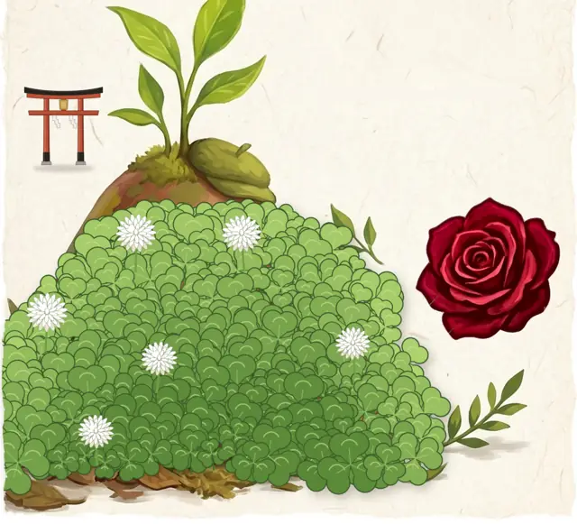
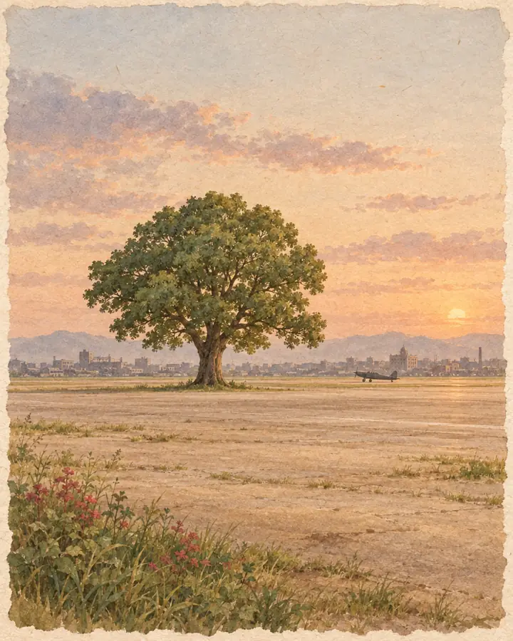
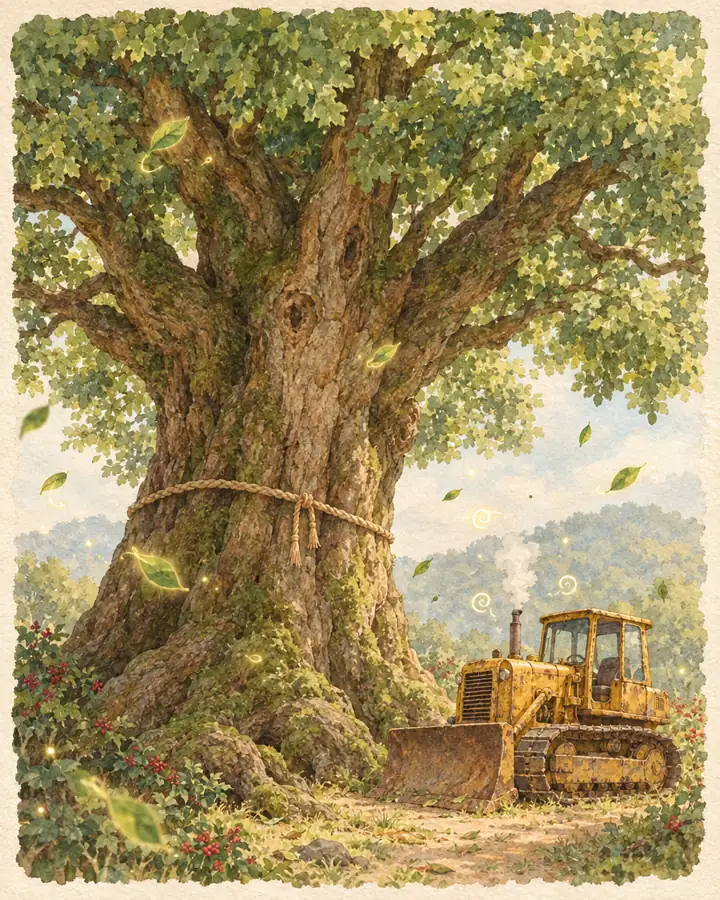
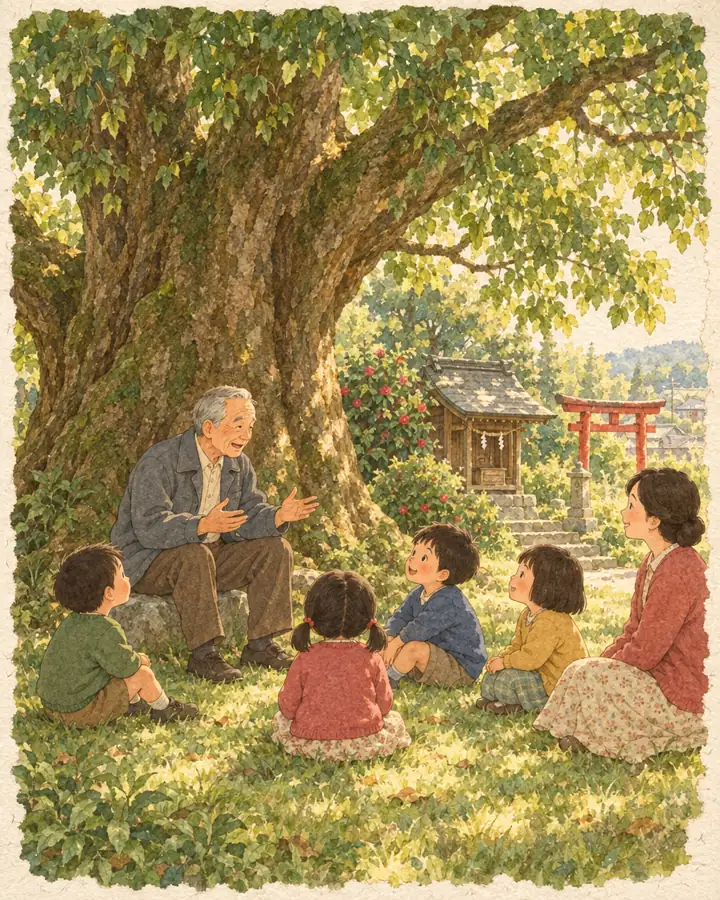
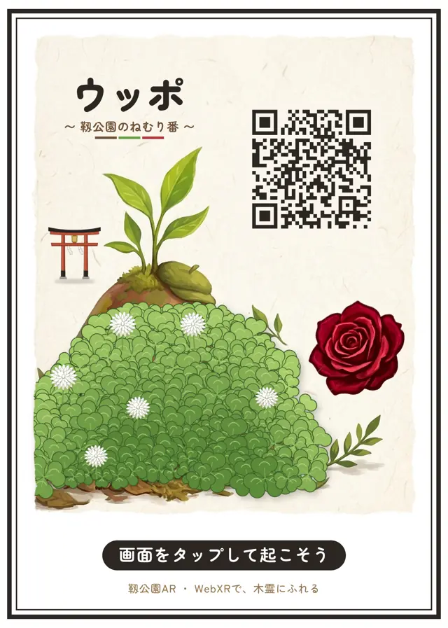

むかし、この公園の あたりは 戦争で 焼けてしまいました。
そのあと、アメリカ軍の 飛行場が つくられました。

この公園には、大きな木を まもってきた
小さな ねむり番が いるのです。

むかし、この公園の あたりは 戦争で 焼けてしまいました。
そのあと、アメリカ軍の 飛行場が つくられました。

飛行場には、何百年も 生きてきた 大きな 楠が 立っていました。
「じゃまだから 切ってしまおう」——
そう決まりかけたとき、機械が 動かなくなったり、ふしぎなことが つづけて 起きたのです。

「この木は 神さまの木。切ってはいけない。」
そんな お話が 町に 広まり、楠は 切られずに のこりました。
お話を つくって 木を まもったのは、町の 歴史に くわしい人だったとも 伝えられています。
1952年、土地は 大阪市に かえされ、1955年、ここは みどりの 靱公園に なりました。

「ぼくは ウッポ。あの 楠の ねむり番を している 木霊だよ。
ときどき だれかに 起こしてほしく なるんだ。
この カードに カメラを むけて、そっと 画面に ふれてみて。
ぼくが 起きたら、バラが さくよ。」
神社に ついたら
下の［ARを体験する］を おして、鳥居の 正面から カメラを むけてね。御神木の ねもとで、ウッポが まっているよ。
※ おまいりの 人の じゃまに ならないように してね。
※ 地図は おおまかな 位置です。
この ものがたりは、靱公園の 歴史と、
楠永神社に 伝わる お話を もとにした ファンタジーです。